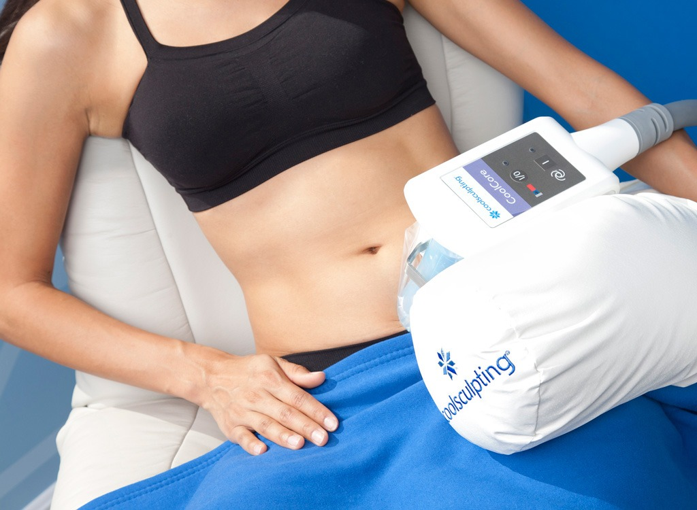
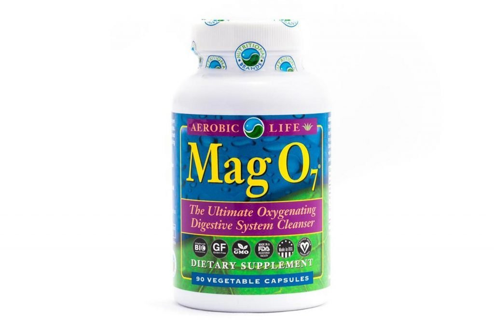
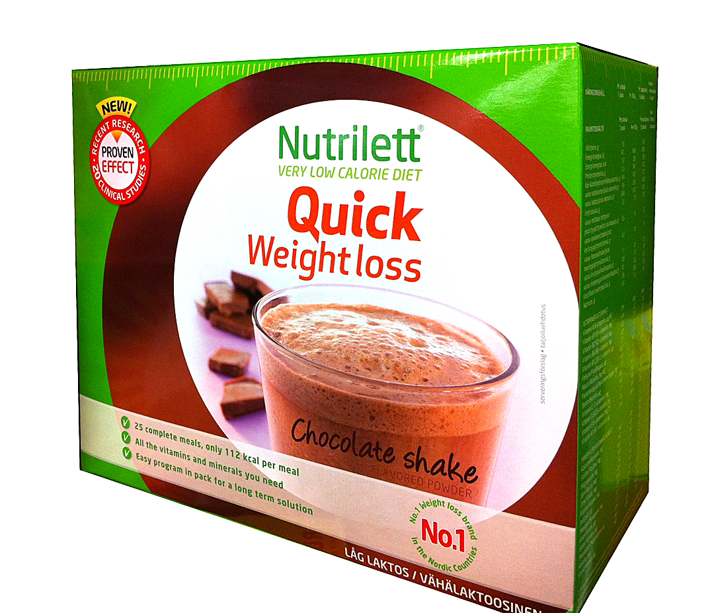

No Evidence Weight Loss Products, Powder Will Help You Lose Weight
2020.12.07 12:17
LOGIN | REGISTER Endocrine Disorders Addison's Disease Cushing’s Syndrome Gestational Diabetes Graves' Disease Growth Hormone Deficiency Hashimoto's Thyroiditis Hyperglycemia Hyperthyroidism Hypoglycemia Hypoparathyroidism Hypothyroidism Low Testosterone Medullary Thyroid Cancer Obesity Osteoporosis Prediabetes Thyroid Cancer Thyroid Nodules Type 1 Diabetes Type 2 Diabetes All Endocrine Disorders The Endocrine System Adrenal Glands Hypothalamus Gland Ovaries Pancreas Parathyroid Glands Pineal Gland Pituitary Gland Testes Thymus Gland Thyroid Gland Community Advice Patient Guides News and Research Visit Our Clinician Site FOLLOW US Email Print Discuss Home » Obesity » News and Research
Do Weight Loss Pills, Powders, Products Really Work? Don t Bet on It
Written by Kathleen DohenyWith Scott Kahan, MD, MPH, and Caroline Apovian, MD
With overweight and obesity a constant struggle for many adults in the United States, it's a given that weight loss efforts occupy our minds much of the time.
On some level, we know there is no quick fix, no product that will melt away our fat while we sleep, simply no effortless answer to rid us of those excess pounds. Despite our best instincts, it’s hard not to be drawn to the latest, newly promising methods that say you don’t have to spend another day fighting to lose weight. Yes—The appealing and very insistent promotions are nearly impossible to resist.
You may be interested in these related articles: Why Won t BMI Die? What Does Obesity Mean for Your Health—Heart, Thyroid, Diabetes? Is Bariatric Surgery Right for You? Intragastric Balloon Deaths: What the FDA Wants You to KnowJust google weight loss and up pop 1,340,000,000 hits that suggest ways to help you lose your belly fat, and slim down fast. And no question about it, most of the info that comes up on your screen calls to you to believe, if only you could lose 21 pounds lost in just as many days, pop a pill to cure your constant hunger and cravings, and the promises of fast, effortless weight loss goes on and on.
Trying to lose weight with unproven weight loss products and supplements may land you in the emergency room. Photo: 123rf
Want Easy Weight Loss—Save Your Money, and Shut Out the Noise
So what to believe, especially if the method comes in the form of dietary supplements, treatments like hypnosis or acupuncture, detox cleanses, or special diets?
Probably none of the above, say a team of obesity experts who combed through thousands of studies published in medical journals to weed out the science from the snake oil. 1
One of the leaders in this effort to sort out the facts from the fakes is Scott Kahan, MD, MPH, FTOS, director of the National Center for Weight and Wellness and medical director of the George Washington University's Strategies to Overcome and Prevent (STOP) Obesity Alliance in Washington, DC. As a member of the Obesity Society Clinical Committee that undertook this examination of weight loss products, pills, and promises, he presented their findings at the 2018 ObesityWeek meeting in Nashville, Tennessee. 1
"We found there is virtually no scientifically rigorous data to support the use of essentially all of these products that are have not been received [Food and Drug Adminstration] approval for weight loss," he tells EndocrineWeb.
That conclusion matters not just to protect you with regard to your weight loss efforts but also for the sake of your health safety. About 23,000 emergency department visits and more than 2,000 hospitalizations a year have been traced back to the use of dietary supplements, and weight loss pills, which are most commonly involved. 2
Evaluating Popular Weight Loss Products, Pills, and Programs
Members of the Obesity Society Clinical Committee decided to look more closely at weight loss products, anti-obesity treatments, and similarly promoted weight reducing supplements and services that are widely used. 2
"The vast majority of the products we identified were dietary supplements and herbal preparations," Dr. Kahan says. In particular, the most common include—B12 injections, green coffee bean extract, bitter orange, DMAA and similar pills that contain amphetamines, as well as hypnosis, detox cleanses, and acupuncture. 2
To compose the list of the weight loss remedies out there, the researchers looked through studies in the medical literature from 1960 to the present, applying standards of evidence-based in assessing the research findings. 2 Patients, for instance, had to be adults, age 18 and older, and diagnosed as overweight or with obese. Ideally, a sound study included a control group and a treatment group to better evaluate how well the method worked. The study results had to demonstrate significant weight loss, either by lowering body mass index, waist circumference, or overall body fat (adipose tissue) loss.
The initial list of 21,000 studies was whittled down to some 14,000 after the review panel excluded research that did not meet the established requirements. 2 When they applied even more criteria, such as excluding those studies that were conducted on animals, were duplicates on the list, or those that looked at bariatric surgery, the final list was 313. 2
Among the products and services that made the final cut were ones on acupuncture, calcium and vitamin D, chitosan, chromium, ephedra/caffeine, garcinia, green tea, linoleic acid, mind-body and Phaseolus (a bean).
Evidence Is Completely Lacking Across the Entire Weight Loss Category
Much as we keep hoping for just one good product to solve this vexing problem, there’s only one good answer: lifestyle. The conclusions arrived at by this esteemed group of nutrition experts, was echoed a few months back by none other than Dr. Oz, who doesn’t recommend any supplement to promote weight loss. He says the best way to lose weight is to sleep more. 3
Even the few studies that managed to meet the scientific criteria still fell short, Dr. Kahan tells EndocrineWeb, mostly because they had too few participants to justify any favorable conclusions. More importantly, the trials that do have conclusive data often found no weight loss effect, or no improvement in weight measurements when compared to a group that got no treatment. 2
While the review panel looked at a variety of weight loss products and approaches, ''the lion's share of the advertising and claims out there are for weight loss supplements," he says.
And he makes a point of needed to take the consequences of using these products seriously—as everyone should. "Some of these products and programs are extremely expensive, and ultimately they don't seem to offer anything to patients except false hope and empty promises." Not to mention, as statistics suggest, the risk of a trip to the emergency room or a hospital stay, and at the very least, a big waste of money.
Ask Your Doctor Before Trying Any Over-the-Counter Weight Loss Product
If your doctor reacts negatively or offers feedback suggesting you are better off avoiding the pill or product you were hoping would help when you ask about weight loss supplements or other heavily-advertised diet methods, you’ll know that it’s because they are aware of this new research showing that their skepticism is well-founded, Dr. Kahan says. We are urging doctors to become more vocal in warning patients away from these potentially harmful products.
Patients need to first realize that obesity is a chronic disease, says Caroline Apovian, MD, FACP, FACN, FTOS, professor of medicine and pediatrics at Boston University School of Medicine and immediate past president of The Obesity Society who reviewed the study findings. “As such, patients must accept that addressing their excess weight needs to become a long-term commitment requiring ongoing efforts. And, it’s important to understand that obesity for the vast majority of you will be relapsing, meaning you can expect that any lost weight is likely to creep back up.
Just as high blood pressure and diabetes, for instance, need to be continually treated to be well managed, so does obesity, Dr. Apovian tells EndocrineWeb. "These snake oil therapies [reviewed by Dr. Kahan and the TOC research committee] will go away as soon as the public recognizes that obesity must be handled with a commitment to lifestyle changes, and possibly helped along with medication or surgery," she says.
"The only FDA-approved medication that you can get over the counter (OTC) for obesity is orlistat (brand names: Alli, Xenical). I consider orlistat similar to Zantac (ranitidine) for gastric [acid] reflux." That's the condition in which there is a burning sensation in your throat or mouth. "But when the reflux doesn’t respond to the medication and becomes an ulcer, you need to work with your doctor to get a prescription treatment to properly care for the problem."
After all, anyone who successfully reduces fat weight with surgery or medications and now has BMI of 23 kg/m 2, which is considered a healthy weight, still has obesity, just as a person with blood cholesterol levels in the normal ranges while taking a statin still has heart disease but is on medications.
As frustrating as it may be, says Dr. Apovian, “patients with obesity who are willing to commit to a lifelong effort, even after they shed the weight, can take off and keep off enough weight to reduce serious risks like diabetes and heart disease. "
In the future, doctors and patients will hopefully have better information about how to navigate the avalanche of data around weight loss methods, says Dr. Kahan. That is due to research to be carried out with a grant from Google. "The grant was given to the National Academy of Medicine," he says. "It will be an ongoing project to address misinformation online in key subject areas, including obesity/weight loss."
Meanwhile….In conjunction with the American Heart Association and the American College of Cardiology, the Obesity Society has published guidelines to guide doctors in helping people manage overweight and obesity with safe and proven methods. 5 Alas, there are no magic pills or powders or diets involved, but there is strong evidence that the recommended strategies work.
Among them: aiming to lose just 5% of your starting weight to be healthier in terms of blood pressure and other barometers by making some lifelong lifestyle changes with regard to your food choices, following a reduced-calorie diet (individualized for your size and weight) and engaging in daily physical activity even if its just walking.
Last updated on 11/20/2018 Continue Reading Best Diet for Weight Loss, Your Choice: Low Carb vs Low Fat View Sources Kahan S. Separating out the snake oil from the science: A systematic review of popular weight loss products and remedies. Presented at: ObesityWeek 2018, November 11-15, 2018, in Nashville, Tennessee. Kahan S, Manson JE. Obesity Treatment, Beyond the Guidelines. JAMA . 2018; submitted. Bravo. Dr. Oz shared his number 1 weight loss tip and you’re really going to like this. Available at: www.bravotv.com/watch-what-happens-live-with-andy-cohen/lookbook/dr-oz-shared-his-no1-weight-loss-tip-more-sleep . Accessed November 19, 2018. Geller AI et. al. Emergency Department Visits for Adverse Events Related to Dietary Supplements. NEJM October 15, 2015 373 (16) 1531-40. Available at: https://www.ncbi.nlm.nih.gov/pubmed/26465986 Accessed November 16, 2018. Jensen MD, Ryan DH, Apovian CM, et al. 2013 AHA/ACC/TOS Guideline for the Management of Overweight and Obesity in Adults. A Report of the American College of Cardiology/American Heart Association Task Force on Practice Guidelines and The Obesity Society. Circulation . 2013;129:S102–S138. You May Also Like:More News and Research
Anaplastic Thyroid Cancer Diabetes Follicular Thyroid Cancer Hypothyroidism Medullary Thyroid Cancer Menopause Obesity Osteoporosis Papillary Thyroid Cancer Thyroid Cancer Thyroid Diseases Type 1 Diabetes Type 2 Diabetes EndocrineWebJOIN OUR COMMUNITY. IT'S FREE.
Ask questions. Share your opinions. Get advice. Join NowResources
Community Advice Patient GuidesPolicy and Contact
About EndocrineWeb Advertising Opportunities Editorial Board Editorial Guidelines Privacy Policy Advertising Policy Do Not Sell My Info Cookie Preferences Terms of Use Contact Us For Professionals © 2020 Remedy Health Media, LLC ALL RIGHTS RESERVED This information is not designed to replace a physician's independent judgment about the appropriateness or risks of a procedure for a given patient. Always consult your doctor about your medical conditions. Remedy Health Media & EndocrineWeb do not provide medical advice, diagnosis or treatment. Use of this website is conditional upon your acceptance of our user agreement.Sign up for our newsletter, and get this free sanity-saving guide to life in the time of corona. Sign Up × SHOW MAIN MENU SHOW SUB MENU
- Weight Loss? Easy! The Best Supplements to Keep Fit ...
- 12 Popular Weight Loss Pills and Supplements Reviewed
- 13 best Patanjali Products for weight loss (With Price)
- Weight Loss: Buy Weight Loss Products Online At Best ...
- Amazon.com: Weight Loss: Health & Household: Supplements ...
- Shark Tank Weight Loss Products 2020: What's Real and What ...
- Top 10 Weight Loss Products On Amazon (Of ALL TIME ...
- Dietary supplements for weight loss - Mayo Clinic
- 11 Supplements and Herbs for Weight Loss Explained - WebMD
- 10 BEST Weight-Loss Products That Actually Work | TDE
- Weight Loss? Easy! The Best Supplements to Keep Fit ...
A safe and effective way to lose weight is always going to be in demand. This is a guide to the various weight loss products that have been featured on Shark Tank. As always, our goal is for you to make informed and safe choices when buying health products.
- 12 Popular Weight Loss Pills and Supplements Reviewed
TruVision Health Weight Loss: Order TruVision weight loss combo. TruVision Health trufix and trucontrol sample. Buy TruVision. Lose avg. 4-7 lbs in the 1st week. New Truvy products.
- 13 best Patanjali Products for weight loss (With Price)
2019 Best Weight Loss Products. Though I’m still on my weight loss journey and have about another 30 pounds to lose, I am 30 pounds below my max weight of nearly 200 pounds.No, that doesn’t make me a weight loss expert, but I do feel like I know at least a little about what is truly helpful and what is not.Especially for those of us who have problems committing long-term to workout plans ...
- Weight Loss: Buy Weight Loss Products Online At Best ...
Buy Weight Loss Supplements online at Chemist Warehouse and enjoy huge discounts across the entire range. Shop products online or in store today. Exclusive Offers And Big Savings Delivered to your inbox! sign up. Required field. Invalid email address. Please try again. There was an issue. Please reload the page try again.
- Amazon.com: Weight Loss: Health & Household: Supplements ...
The average weight loss in the supplement group was 4.2 pounds (1.9 kilograms). The average weight loss in the placebo group was 0.9 pounds (0.4 kilograms). While these results are intriguing, the fact that the trial was small and lasted only eight weeks means the results can't be reliably generalized to real-world situations.
- Shark Tank Weight Loss Products 2020: What's Real and What ...
The low levels of fat and carbohydrates in the best protein powders makes them one of the best weight loss products that actually work. Dog. Me and my girlfriend recently got a dog. What a great way to get your ass off the couch! Since I care a lot about our dog I feel that I have to get out on long walks, for the dog’s sake.
- Top 10 Weight Loss Products On Amazon (Of ALL TIME ...
There are many different weight loss solutions out there. This includes all sorts of pills, drugs and natural supplements. These are claimed to help you lose weight, or at least make it easier to ...
- Dietary supplements for weight loss - Mayo Clinic
The Best Trader Joe's Products For Weight Loss We know the popular supermarket chain avoids marketing their products, and that may be why countless hidden health gems secretly lurk on TJ's shelves.
- 11 Supplements and Herbs for Weight Loss Explained - WebMD
Since weight loss is a function of burning more calories than your body absorbs, a weight loss pill can tackle one or both of these potential avenues to generate weight loss. Weight loss pills are great for people on a diet, as they are a natural compliment to an exercise and diet-focused weight loss program .
- 10 BEST Weight-Loss Products That Actually Work | TDE
Shop Weight Management. Should you take a weight loss supplement every day? The best way to use weight loss supplements is to take them every day as directed for a short period of time (2-6 weeks). You should only need the extra support of these products when you are looking for that final boost for your fat loss diet.
A safe and effective way to lose weight is always going to be in demand. This is a guide to the various weight loss products that have been featured on Shark Tank. As always, our goal is for you to make informed and safe choices when buying health products.
TruVision Health Weight Loss: Order TruVision weight loss combo. TruVision Health trufix and trucontrol sample. Buy TruVision. Lose avg. 4-7 lbs in the 1st week. New Truvy products.
2019 Best Weight Loss Products. Though I’m still on my weight loss journey and have about another 30 pounds to lose, I am 30 pounds below my max weight of nearly 200 pounds.No, that doesn’t make me a weight loss expert, but I do feel like I know at least a little about what is truly helpful and what is not.Especially for those of us who have problems committing long-term to workout plans ...
Buy Weight Loss Supplements online at Chemist Warehouse and enjoy huge discounts across the entire range. Shop products online or in store today. Exclusive Offers And Big Savings Delivered to your inbox! sign up. Required field. Invalid email address. Please try again. There was an issue. Please reload the page try again.
The average weight loss in the supplement group was 4.2 pounds (1.9 kilograms). The average weight loss in the placebo group was 0.9 pounds (0.4 kilograms). While these results are intriguing, the fact that the trial was small and lasted only eight weeks means the results can't be reliably generalized to real-world situations.
The low levels of fat and carbohydrates in the best protein powders makes them one of the best weight loss products that actually work. Dog. Me and my girlfriend recently got a dog. What a great way to get your ass off the couch! Since I care a lot about our dog I feel that I have to get out on long walks, for the dog’s sake.
There are many different weight loss solutions out there. This includes all sorts of pills, drugs and natural supplements. These are claimed to help you lose weight, or at least make it easier to ...
The Best Trader Joe's Products For Weight Loss We know the popular supermarket chain avoids marketing their products, and that may be why countless hidden health gems secretly lurk on TJ's shelves.
Since weight loss is a function of burning more calories than your body absorbs, a weight loss pill can tackle one or both of these potential avenues to generate weight loss. Weight loss pills are great for people on a diet, as they are a natural compliment to an exercise and diet-focused weight loss program .
Shop Weight Management. Should you take a weight loss supplement every day? The best way to use weight loss supplements is to take them every day as directed for a short period of time (2-6 weeks). You should only need the extra support of these products when you are looking for that final boost for your fat loss diet.
  